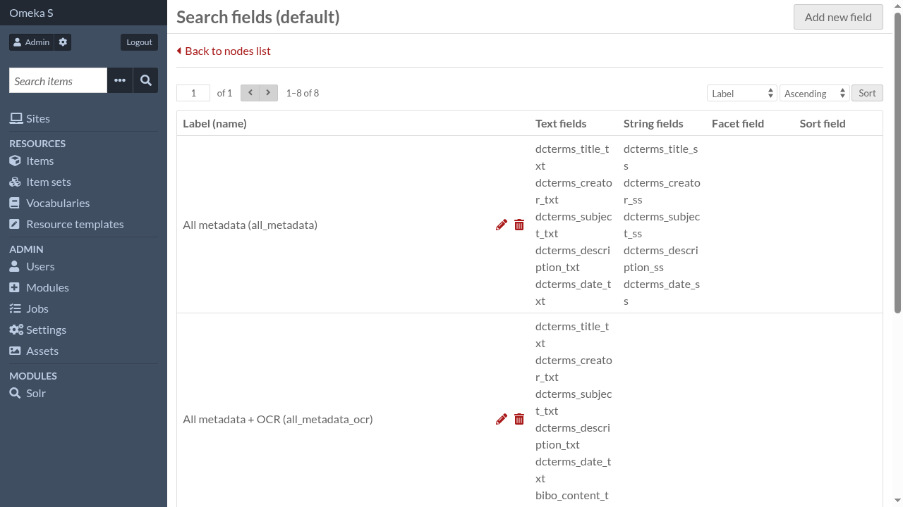
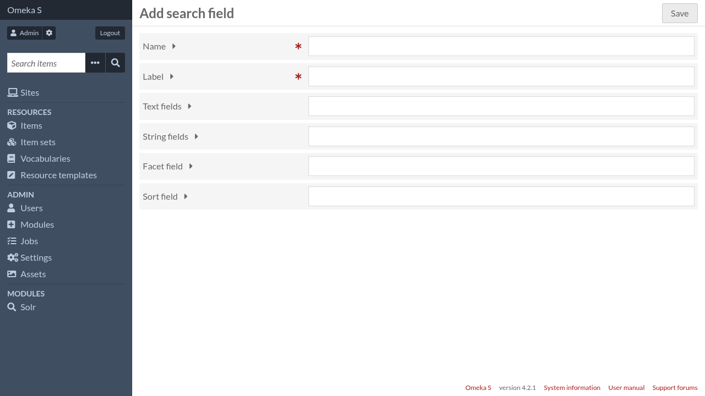

Search fields
Search fields are what is exposed to the Search module. This is where you decide what Solr fields are used depending on the operation (search, faceting, ordering)

Add a new search field
To create a new search field, click on “Add new field”.

- Name
The name will be used internally before being translated to the Solr field name. It will also be available in queries to search on this specific field. It should contain only alphanumeric characters and underscore, and should not start with a digit.
- Label
The label is the human-friendly version of the name
- Text fields
A space-separated list of Solr fields which will be used when a search needs to be performed on text fields. Leave empty to forbid text search on this field.
- String fields
A space-separated list of Solr fields which will be used when a search needs to be performed on string fields. Leave empty to forbid string search on this field.
- Facet field
The Solr field which will be used for faceting. Leave empty to forbid faceting on this field.
- Sort field
The Solr field which will be used for sorting. Leave empty to forbid sorting on this field.